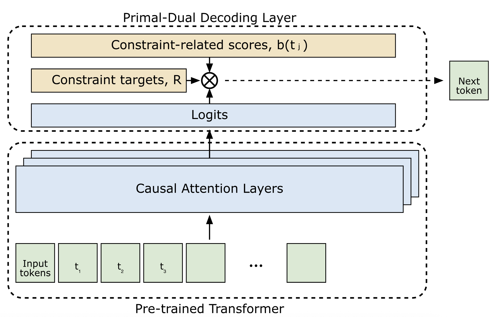
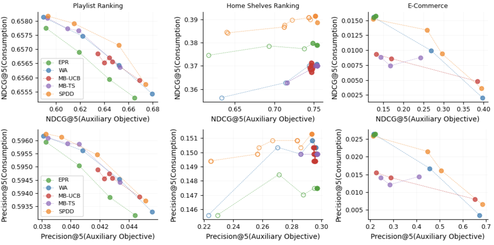
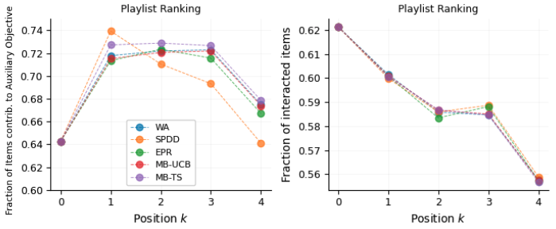
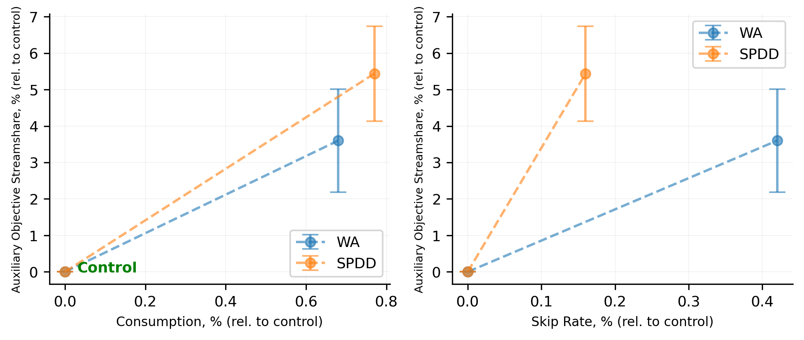

Contents · 9 sections
1What problem is it solving?2The big picture first3How the weight tracks "how far behind"4An analogy: budget pacing in ads5What the theory guarantees6Experiments: how big is the effect?7Limitations as I see them8How a recommendation team could try it9VerdictSHARE
Teams that run generative recommenders and also have to meet business quotas (a share for some content type, exposure for new items, category coverage) should read this. It addresses a very common problem: the model is trained only for relevance, yet the business wants a certain share of one kind of content in each slate, and those requirements change often enough that retraining a large model each time is not an option. The core idea in one sentence: SPDD (Stochastic Primal-Dual Decoder) makes the model choose each position by "relevance score + weight × this item's contribution to the quota", and the weight rises and falls automatically with how far behind the quota is, growing when the slate lags and shrinking when it is ahead. Key numbers: in an online experiment with about 1M Spotify users, the stream share of promoted content rose 5.44% relative to control, versus 3.60% for the fixed-weight approach; skip rate rose 0.16% and 0.42% respectively, so SPDD has the smaller side effect. Offline, across three domains and three models, its trade-off curve sits above every baseline almost everywhere.
What problem is it solving?
Start with an illustrative scenario. A music platform uses an autoregressive model such as SASRec to generate a 10-track playlist for a user: the model reads the listening history, picks track 1, appends it to the input, picks track 2, and so on. The platform has one more requirement: every playlist must contain at least 3 tracks from a set of content it wants to promote. For confidentiality the paper does not say what this set is; think of new artists or local music.
There are two common approaches, plus a third that is rarely practical, and each has a problem.
| Approach | How it works | Problem |
|---|---|---|
| Re-rank after generation | Generate the whole slate by relevance, then sort by a weighted mix of relevance and "is it promoted" | In an autoregressive model, the choice for track 3 changes the scores for track 4; re-ranking afterwards uses stale scores |
| Fixed weight at decoding | At every step choose by "relevance + fixed weight × promoted flag" | The weight is the same no matter how many promoted tracks are already in; it often keeps pushing them after the quota is met |
| Put the goal into training | Add a quota-related loss or condition during training | Any change to the quota or the content set means retraining, which is unrealistic at scale |
The authors' observation is that the right weight depends on how much has already been delivered. If the first few tracks contain no promoted content, the rest of the slate has to push harder; once enough is in, the slots should go back to the most relevant tracks. So the weight should change during generation rather than stay fixed, and that is the starting point of SPDD.
The big picture first

The whole procedure runs only at inference time:
| Step | What happens | Output |
|---|---|---|
| 0. Setup | Give each candidate a contribution value b (1 for promoted tracks, 0 otherwise) and set the slate-level target R | b for every candidate, target R |
| 1. Score | The underlying model computes each candidate's relevance p as usual | Relevance scores for this position |
| 2. Combine and pick | Each candidate's score = p + λ × b; pick the highest | The item for this position |
| 3. Update the weight | Compare this step's contribution with the average needed, R/K, and lower or raise λ accordingly | λ for the next step |
| 4. Loop | Repeat 1–3 until all K positions are filled | The full slate |
The key division of labour: the underlying model handles only relevance; the quota is managed entirely by one progress-dependent weight in the decoding layer. The next sections take apart how that weight changes and why.
How the weight tracks "how far behind"
In optimisation terms λ is a Lagrange multiplier; read it as "how much relevance meeting the quota is worth right now". The selection rule at each step is:
is the model's relevance for candidate given the first k−1 picks, is its quota contribution, and is the current weight. With a large λ, promoted tracks are more likely to be chosen; with a small λ, the choice is essentially by relevance.
After each pick λ is updated:
R/K is the slate-level target spread evenly over positions: wanting 3 of 10 tracks means each position should contribute 0.3 on average. If the chosen track contributes more than that share, the exponent is negative and λ shrinks; if less, λ grows. η is the step size and sets how quickly λ reacts. The authors derive this update with mirror descent (an online optimisation method that keeps the variable positive and updates it multiplicatively), starting from λ₀=1.
A hand-computable example (all numbers illustrative, and relevance is assumed not to change over these steps): K=10, R=3, η=1. The most relevant ordinary track has p=0.30; the most relevant promoted track has p=0.12.
| Step | λ | Promoted score | Ordinary score | Picked | λ after update |
|---|---|---|---|---|---|
| 1 | 1.00 | 0.12+1.00=1.12 | 0.30 | Promoted | e^(−0.7)≈0.50 |
| 2 | 0.50 | 0.62 | 0.30 | Promoted | e^(−1.4)≈0.25 |
| 3 | 0.25 | 0.37 | 0.30 | Promoted | e^(−2.1)≈0.12 |
| 4 | 0.12 | 0.24 | 0.30 | Ordinary | e^(−1.8)≈0.17 |
The quota fills quickly in the first three steps, λ falls from 1 to 0.12, and at step 4 the slot goes to the more relevant ordinary track. After that, each ordinary track reduces the accumulated surplus by 0.3, and λ slowly climbs back. This shows that SPDD really manages "has the cumulative contribution kept up with k×R/K by position k", not "stop once 3 tracks are in".
The example also shows that score scale matters a lot. If p is a probability normalised over millions of tracks, a single candidate's p is usually far below 1, and with λ₀=1 a promoted track starts with a full extra point, so the first few steps almost certainly go to promoted content. The paper's equations use the probability p while its architecture figure says logits, and the two live on very different scales; the paper does not discuss how to align the scales of b and p or how to choose the initial λ.
An analogy: budget pacing in ads
Anyone who has worked on ad systems will recognise this mechanism. Ad delivery commonly uses budget pacing: a day's budget is spread across time slots, bids go up when spend lags the plan and down when it runs ahead, and one progress-dependent multiplier controls the rhythm. SPDD moves the same idea into the generation of a single recommendation slate (the paper even calls the contributions b "bids"):
| Ad budget pacing | SPDD |
|---|---|
| A day's total budget | The slate-level quota target R |
| Planned spend per time slot | The average contribution needed per position, R/K |
| Bid multiplier | λ |
| Actual spend in a slot | The contribution b of the track picked at this step |
| Raise bids when behind, lower when ahead | Raise λ when the contribution is below R/K, lower it when above |
The paper cites exactly this line of online allocation and pacing work, and the algorithm comes from the same family. The analogy also explains why its complexity is linear in both slate length K and candidate count M: each step adds only one addition per candidate and one exponential.
What the theory guarantees
The authors give two bounds. The bound on quota violation scales roughly with 1/η, so a larger η better guarantees the quota is met. The regret bound (relevance lost relative to the best allocation in hindsight) contains a 1/η term and an ηK term, so too large an η also increases the relevance loss. η is therefore an explicit knob: turn it up when the quota is demanding, down when it is mild.
To make the proof work, the authors assume that each pick perturbs the other candidates' relevance only by small zero-mean Gaussian noise. In a real autoregressive model, picking one rock track may systematically raise the score of the next rock track, so the assumption may not hold; these bounds are better read as guidance on tuning direction than as strict guarantees.
Experiments: how big is the effect?
The offline experiments cover three domains, each with a different generative model. Every underlying model is trained only for relevance, and the different decoding strategies are layered on the same model outputs, so the comparison isolates the decoding layer.
| Domain | Data | Model | Quota definition |
|---|---|---|---|
| Playlists | Two weeks, 62M users, 42M tracks, about 40B interactions | SASRec, about 250M parameters | Stream share of promoted tracks |
| Home shelves | One week, 500M+ requests, 5.3B shelf impressions | TransAct | Exposure of promoted shelves |
| E-commerce | Amazon Sports & Outdoors, 5M+ interactions, 1M+ items | Fine-tuned Llama-3.2-1B, items represented by semantic IDs | Camping & Hiking plus Cycling, about 15% of items |
There are four baselines: re-ranking after generation (EPR), fixed weights at decoding (WA), and two methods that learn the weights online with multi-armed bandits (MB-UCB and MB-TS). Each method is run with different targets or weights, giving a set of "consumption metric vs quota metric" points joined into a trade-off curve.

Three things can be read from this figure. First, re-ranking after generation is dominated on playlists and e-commerce, and is especially weak on e-commerce: the promoted categories are only about 15% of items, so a slate generated purely for relevance contains very few of them and re-ranking has nothing to swap in. This shows that in autoregressive generation the quota has to act during generation. Second, the two bandit methods are not consistently better than fixed weights; the authors attribute this to exploration cost cancelling out the benefit of adaptivity. Third, SPDD's advantage is clearest on e-commerce; on playlists the whole range of consumption NDCG@5 is only 0.655 to 0.658, and the gaps between methods are in the third decimal place.
The authors also looked at what SPDD does per position:

This matches the hand-computed example: fill the quota at the top positions first, then give the rest back to relevance. The near-identical lines on the right show that this ordering has very little effect on the listening rate at each position.
The online experiment ran at Spotify with about 1M users in more than 150 countries and re-ranked 600K personalised playlists. There were three arms: control, generating only for consumption with SASRec; fixed weights; and SPDD. The three baselines that were weaker offline were not deployed.
| Relative to control | Fixed weights (WA) | SPDD |
|---|---|---|
| Stream share of promoted content | +3.60% | +5.44% |
| Skip rate | +0.42% | +0.16% |
| Minutes played (read from the figure) | about +0.7% | about +0.8% |

SPDD achieves a higher promoted share, a smaller rise in skip rate, and no drop in minutes played. The abstract's "+1.8% gain in the auxiliary objectives at zero cost to user satisfaction" is, judging by the numbers, the difference between 5.44% and 3.60%, and the comparison is against fixed weights, not against control.
Limitations as I see them
First, the statistical strength of the online advantage is unclear. The promoted-share intervals for SPDD and fixed weights (about 4.1%–6.7% versus 2.2%–5.0%) overlap substantially, and the paper does not report significance for the difference between the two. Both arms also raise skip rate relative to control, so "no cost to user satisfaction" refers to minutes played, not to every experience metric.
Second, many offline gaps are very small. On playlists, the two curves for different η move consumption NDCG@5 only between 0.65802 and 0.65820, a difference in the fourth or fifth decimal place. That shows the direction of the η trade-off, but its practical meaning is limited.
Third, the score scale and the quota definition are both black boxes. The paper does not say how b and p are put on the same scale or how the initial λ is chosen, and the hand-computed example shows this directly determines the behaviour of the first few steps. The quota content is abstracted for confidentiality, and only one quota is demonstrated; what to do when several quotas coexist and conflict is left to future work.
How a recommendation team could try it
- First swap the existing fixed weights for SPDD in offline replay. The change is almost the same size, with one extra λ update; compare trade-off curves on the same logs to see whether the whole curve moves up in your own setting.
- Fix the scale before tuning η. Map relevance scores into a range comparable with b (for example softmax probabilities times a constant, or standardised logits), then plot the share of quota content per position to make sure the first few slots are not all quota content.
- Pick η by quota level. Use a small η when the quota is mild to limit relevance loss, and a large η when it is demanding to make sure it is met, which matches the paper's η experiment.
- When going online, watch quota attainment, listening or click time, and skip rate together, and test separately whether SPDD's difference from fixed weights is significant, not just its difference from control.
Verdict
In one sentence: quota-type business goals can stay out of model training and be controlled at decoding time with one progress-dependent weight, at a lower relevance cost than a fixed weight.
| Dimension | Assessment |
|---|---|
| Importance of the problem | High. Content promotion, category coverage and fairness constraints exist in almost every recommender |
| Novelty of the method | Medium. Primal-dual methods for online allocation are mature; what is new is placing one inside every step of autoregressive decoding |
| Experimental evidence | Medium. Three domains, three models and an online test, but the online intervals overlap with fixed weights and offline gaps are often tiny |
| Engineering cost | Low. The model is untouched, only decoding changes, and complexity is linear |
| Worth trying? | Yes. For teams already meeting quotas with fixed weights, the switching cost is very low |
How did this read for you?
Hoot made a note. Thanks for the feedback.
One tap, no sign-in; tap again to undo. Only anonymous counts are kept, never who you are.
Discussion
Add experiment details, reproduction notes or a different take. Requires a GitHub sign-in.
Loading the discussion…